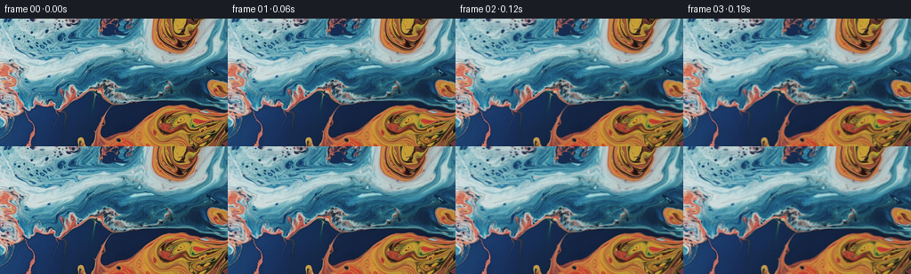
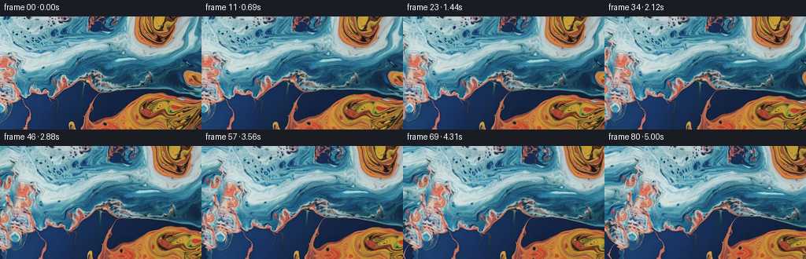
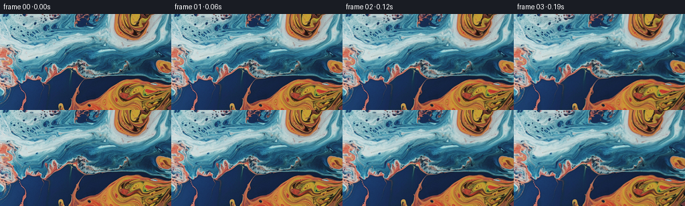

← 本轮 smoke 总览traex/GPT-6.1-Sol · 0001_s4
text · 256×144 · 16.0 FPS · 81 帧 · 状态 complete · 输出 tokens 8962
原始任务a close up of a blue and orange liquid, camera pans left
当前保存结果
已保存候选与代码修改
这里按时间展示外部捕获的候选，每份均可单独播放。保存新版本不等于完成视觉检查；下方工具证据记录实际看过的图。
候选 01 · 2026-11-09T00:09:44.913572+00:00 · 点开播放与检查图
inspection.png
transition_check.png

代码变化
--- 上一保存版本
+++ 本次保存版本
@@ -0,0 +1,166 @@
+"""Deterministic image-based macro liquid animation, using only local RGB pixels.
+
+A nonparametric texture continuation supplies the newly exposed left edge.
+Divergence-free eddies advect the image independently of the leftward camera.
+"""
+from pathlib import Path
+import numpy as np
+from PIL import Image
+import artifact_io
+
+
+def seam_vertical(cost):
+ """Minimum-error path through an overlap, one x position per y."""
+ h, w = cost.shape
+ total = cost[0].copy()
+ back = np.zeros((h, w), dtype=np.int32)
+ for y in range(1, h):
+ choices = np.stack((np.r_[np.inf, total[:-1]], total,
+ np.r_[total[1:], np.inf]))
+ direction = choices.argmin(axis=0)
+ back[y] = np.arange(w) + direction - 1
+ total = cost[y] + choices[direction, np.arange(w)]
+ path = np.zeros(h, dtype=np.int32)
+ path[-1] = total.argmin()
+ for y in range(h - 1, 0, -1):
+ path[y - 1] = back[y, path[y]]
+ return path
+
+
+def continuation(rgb, left=72):
+ """Overlap-quilt real image patches, preserving the original exactly."""
+ h, w, _ = rgb.shape
+ p, overlap, stride = 36, 12, 24
+ canvas = np.zeros((h, w + left, 3), dtype=np.float32)
+ canvas[:, left:] = rgb
+ known = np.zeros((h, w + left), dtype=bool)
+ known[:, left:] = True
+ # Candidate patches remain within the input, so no external imagery enters.
+ patches = np.lib.stride_tricks.sliding_window_view(rgb, (p, p), axis=(0, 1))
+ patches = patches.transpose(0, 1, 3, 4, 2)
+ ys = list(range(0, h - p + 1, stride))
+ if ys[-1] != h - p:
+ ys.append(h - p)
+ for x in range(left - stride, -1, -stride):
+ prev_y = None
+ for y in ys:
+ existing = canvas[y:y+p, x:x+p]
+ mask = known[y:y+p, x:x+p]
+ # Restrict vertical search to retain the broad cyan/blue strata.
+ cy = np.arange(max(0, y-32), min(h-p, y+32)+1, 2)
+ cx = np.arange(0, w-p+1, 3)
+ candidates = patches[cy[:, None], cx[None, :]].reshape(-1,p,p,3)
+ target = existing[mask]
+ diff = candidates[:,mask] - target[None]
+ costs = np.mean(diff * diff, axis=(1,2))
+ # Weak positional prior avoids borrowing unrelated orange areas.
+ costs += 0.014 * np.tile(cx, len(cy)) ** 2
+ patch = candidates[int(costs.argmin())].copy()
+ keep = np.zeros((p,p), dtype=bool)
+ # Right overlap: retain old pixels to the right of the error cut.
+ er = np.mean((patch[:, -overlap:] - existing[:, -overlap:])**2,axis=2)
+ cut = seam_vertical(er)
+ keep[:, -overlap:] = np.arange(overlap)[None,:] >= cut[:,None]
+ if prev_y is not None:
+ oh = prev_y + p - y
+ et = np.mean((patch[:oh] - existing[:oh])**2,axis=2)
+ cut_top = seam_vertical(et.T)
+ keep[:oh] |= np.arange(oh)[:,None] <= cut_top[None,:]
+ keep &= mask
+ # Never overwrite the exact original.
+ keep |= np.arange(x,x+p)[None,:] >= left
+ canvas[y:y+p,x:x+p] = np.where(keep[:,:,None],existing,patch)
+ known[y:y+p,x:x+p] = True
+ prev_y = y
+ # A short reflected bridge makes the original/continuation join continuous.
+ # It is fully outside the initial field of view.
+ for d in range(1, 11):
+ a = (10-d)/9
+ a = a*a*(3-2*a)
+ canvas[:,left-d] = (1-a)*canvas[:,left-d] + a*rgb[:,d]
+ return canvas
+
+
+def sample(image, x, y):
+ h,w = image.shape[:2]
+ x = np.clip(x,0,w-1.001)
+ y = np.clip(y,0,h-1.001)
+ ix,iy = x.astype(np.int32),y.astype(np.int32)
+ fx,fy = (x-ix)[...,None],(y-iy)[...,None]
+ return ((image[iy,ix]*(1-fx)+image[iy,ix+1]*fx)*(1-fy)
+ +(image[iy+1,ix]*(1-fx)+image[iy+1,ix+1]*fx)*fy)
+
+
+EDDIES = [
+ (35., 43., 40., .055),
+ (191., 20., 29., -.090),
+ (185., 128., 43., .066),
+ (88., 94., 35., -.072),
+ (242., 83., 31., -.058),
+ (-25., 70., 37., .075),
+]
+
+
+def velocity(x,y):
+ # Streamfunction waves have zero divergence and therefore do not pinch
+ # or inflate the pigment. Gaussian vortices gently roll the liquid lobes.
+ u = .85*np.sin(y/38 + .3) + .50*np.sin(x/53+y/49)
+ v = -.55*np.cos(x/49) - (.50*49/53)*np.sin(x/53+y/49)
+ for cx,cy,r,omega in EDDIES:
+ dx,dy = x-cx,y-cy
+ a = omega*np.exp(-(dx*dx+dy*dy)/(2*r*r))
+ u -= a*dy
+ v += a*dx
+ return u,v
+
+
+def generate(case_dir):
+ rgb = np.asarray(Image.open(case_dir/'first_frame.png').convert('RGB'))
+ h,w = rgb.shape[:2]
+ texture = continuation(rgb.astype(np.float32))
+ # The pan goes left, so image features move right and the left strip enters.
+ # Reflection padding is only used beyond the top/bottom of the macro crop.
+ texture = np.pad(texture, ((40,40),(0,40),(0,0)), mode='reflect')
+ yy,xx = np.mgrid[0:h,0:w].astype(np.float32)
+ frames = np.empty((81,h,w,3),dtype=np.uint8)
+ frames[0] = rgb
+ for i in range(1,81):
+ t = i/16.
+ pan = 42*(t-.4*(1-np.exp(-t/.4)))/(5-.4*(1-np.exp(-5/.4)))
+ wx = xx-pan
+ wy = yy.copy()
+ sx,sy = wx.copy(),wy.copy()
+ # Midpoint back-tracing through a steady incompressible liquid field.
+ # Sampling the pristine source at each time avoids cumulative blur.
+ steps = max(2, int(np.ceil(t/.20)))
+ dt = t/steps
+ for _ in range(steps):
+ u,v = velocity(sx,sy)
+ um,vm = velocity(sx-.5*dt*u,sy-.5*dt*v)
+ sx -= dt*um
+ sy -= dt*vm
+ # Subpixel traveling ripples modulate refraction, not the pigment color.
+ phase = .19*wx+.13*wy
+ sx += .42*(np.sin(phase-1.65*t)-np.sin(phase))
+ sy += .38*(np.cos(.12*wx-.21*wy+1.35*t)-np.cos(.12*wx-.21*wy))
+ sx += .20*(np.sin(.31*wx-.09*wy+.90*t)-np.sin(.31*wx-.09*wy))
+ image = sample(texture,sx+72,sy+40)
+ # Very restrained moving illumination on the translucent surface.
+ light = 1+.012*(np.sin(.042*wx+.056*wy-.65*t)
+ -np.sin(.042*wx+.056*wy))
+ image *= light[:,:,None]
+ frames[i] = np.clip(np.rint(image),0,255).astype(np.uint8)
+ assert np.array_equal(frames[0], rgb)
+ artifact_io.save(frames,case_dir)
+ # Local numerical diagnostics; all submitted RGB frames are also PNGs.
+ delta = np.abs(frames[1:].astype(np.float32)-frames[:-1].astype(np.float32))
+ np.save(case_dir/'motion_diagnostics.npy',delta.mean((1,2,3)))
+ print('frames:',frames.shape,frames.dtype)
+ print('adjacent RGB change: min/mean/max',
+ float(delta.mean((1,2,3)).min()),float(delta.mean()),
+ float(delta.mean((1,2,3)).max()))
+ print('first frame pixel-identical:',np.array_equal(frames[0],rgb))
+
+
+if __name__ == '__main__':
+ generate(Path(__file__).resolve().parent)
候选 02 · 2026-11-09T00:10:18.766362+00:00 · 点开播放与检查图
inspection.png

transition_check.png

代码变化
--- 上一保存版本
+++ 本次保存版本
@@ -82,13 +82,25 @@
def sample(image, x, y):
+ """Catmull-Rom reconstruction preserves the fine liquid highlights."""
h,w = image.shape[:2]
- x = np.clip(x,0,w-1.001)
- y = np.clip(y,0,h-1.001)
- ix,iy = x.astype(np.int32),y.astype(np.int32)
- fx,fy = (x-ix)[...,None],(y-iy)[...,None]
- return ((image[iy,ix]*(1-fx)+image[iy,ix+1]*fx)*(1-fy)
- +(image[iy+1,ix]*(1-fx)+image[iy+1,ix+1]*fx)*fy)
+ ix,iy = np.floor(x).astype(np.int32),np.floor(y).astype(np.int32)
+ fx,fy = x-ix,y-iy
+ def weights(f):
+ return (-.5*f+f*f-.5*f**3,
+ 1-2.5*f*f+1.5*f**3,
+ .5*f+2*f*f-1.5*f**3,
+ -.5*f*f+.5*f**3)
+ ax,ay = weights(fx),weights(fy)
+ out = np.zeros((*x.shape,3),dtype=np.float32)
+ for j in range(4):
+ row = np.zeros_like(out)
+ jy = np.clip(iy+j-1,0,h-1)
+ for k in range(4):
+ kx = np.clip(ix+k-1,0,w-1)
+ row += image[jy,kx]*ax[k][...,None]
+ out += row*ay[j][...,None]
+ return out
EDDIES = [
候选 03 · 2026-11-09T00:10:23.548544+00:00 · 点开播放与检查图
inspection.png

transition_check.png

代码变化
代码未变化；重新保存了产物。
可观测工具行为
命令 1 · 2026-11-09T00:07:09.154371+00:00/bin/bash -lc "ls -la && cat prompt.txt && printf '\\n---RULES---\\n' && cat GENERATION_RULES.md"
exit 0 命令 2 · 2026-11-09T00:07:18.762000+00:00/bin/bash -lc "cat task_spec.json && cat artifact_io.py && python - <<'PY'
from PIL import Image
import numpy as np
im=np.array(Image.open('first_frame.png').convert('RGB'))
print('shape',im.shape,'range',im.min(),im.max(),'means',im.mean((0,1)))
a=np.array(Image.fromarray(im).resize((64,36)))
palette=np.array([[5,10,25],[18,40,90],[20,85,155],[30,140,200],[60,200,230],[140,210,230],[220,230,225],[245,245,242],[210,135,70],[230,80,20],[150,40,10],[75,20,10],[140,100,80],[90,80,90]],float)
chars=' .bBCcW@OoRxms'
idx=((a[:,:,None,:]-palette[None,None,:,:])**2).sum(-1).argmin(-1)
print('Legend',list(zip(chars,palette.tolist())))
for row in idx:print(''.join(chars[i] for i in row))
print('RGB grid 16x9:')
print(np.array(Image.fromarray(im).resize((16,9))).tolist())
PY"exit 0 命令 3 · 2026-11-09T00:07:46.423564+00:00/bin/bash -lc "python - <<'PY'
import numpy as np
from PIL import Image
im=np.asarray(Image.open('first_frame.png').convert('RGB'),float)
for s in (1,2,4,8):
print('step',s,'x diff',np.abs(im[:,s:]-im[:,:-s]).mean(),'y diff',np.abs(im[s:]-im[:-s]).mean())
for y in range(0,144,12):
a=im[y:y+12]
print(y, 'left',np.round(a[:,:6].mean((0,1))).astype(int),'right',np.round(a[:,-6:].mean((0,1))).astype(int))
PY"exit 0 命令 4 · 2026-11-09T00:09:37.559417+00:00/bin/bash -lc "cat > generate.py <<'PY'
\"\"\"Deterministic image-based macro liquid animation, using only local RGB pixels.
A nonparametric texture continuation supplies the newly exposed left edge.
Divergence-free eddies advect the image independently of the leftward camera.
\"\"\"
from pathlib import Path
import numpy as np
from PIL import Image
import artifact_io
def seam_vertical(cost):
\"\"\"Minimum-error path through an overlap, one x position per y.\"\"\"
h, w = cost.shape
total = cost[0].copy()
back = np.zeros((h, w), dtype=np.int32)
for y in range(1, h):
choices = np.stack((np.r_[np.inf, total[:-1]], total,
np.r_[total[1:], np.inf]))
direction = choices.argmin(axis=0)
back[y] = np.arange(w) + direction - 1
total = cost[y] + choices[direction, np.arange(w)]
path = np.zeros(h, dtype=np.int32)
path[-1] = total.argmin()
for y in range(h - 1, 0, -1):
path[y - 1] = back[y, path[y]]
return path
def continuation(rgb, left=72):
\"\"\"Overlap-quilt real image patches, preserving the original exactly.\"\"\"
h, w, _ = rgb.shape
p, overlap, stride = 36, 12, 24
canvas = np.zeros((h, w + left, 3), dtype=np.float32)
canvas[:, left:] = rgb
known = np.zeros((h, w + left), dtype=bool)
known[:, left:] = True
# Candidate patches remain within the input, so no external imagery enters.
patches = np.lib.stride_tricks.sliding_window_view(rgb, (p, p), axis=(0, 1))
patches = patches.transpose(0, 1, 3, 4, 2)
ys = list(range(0, h - p + 1, stride))
if ys[-1] "'!= h - p:
ys.append(h - p)
for x in range(left - stride, -1, -stride):
prev_y = None
for y in ys:
existing = canvas[y:y+p, x:x+p]
mask = known[y:y+p, x:x+p]
# Restrict vertical search to retain the broad cyan/blue strata.
cy = np.arange(max(0, y-32), min(h-p, y+32)+1, 2)
cx = np.arange(0, w-p+1, 3)
candidates = patches[cy[:, None], cx[None, :]].reshape(-1,p,p,3)
target = existing[mask]
diff = candidates[:,mask] - target[None]
costs = np.mean(diff * diff, axis=(1,2))
# Weak positional prior avoids borrowing unrelated orange areas.
costs += 0.014 * np.tile(cx, len(cy)) ** 2
patch = candidates[int(costs.argmin())].copy()
keep = np.zeros((p,p), dtype=bool)
# Right overlap: retain old pixels to the right of the error cut.
er = np.mean((patch[:, -overlap:] - existing[:, -overlap:])**2,axis=2)
cut = seam_vertical(er)
keep[:, -overlap:] = np.arange(overlap)[None,:] >= cut[:,None]
if prev_y is not None:
oh = prev_y + p - y
et = np.mean((patch[:oh] - existing[:oh])**2,axis=2)
cut_top = seam_vertical(et.T)
keep[:oh] |= np.arange(oh)[:,None] <= cut_top[None,:]
keep &= mask
# Never overwrite the exact original.
keep |= np.arange(x,x+p)[None,:] >= left
canvas[y:y+p,x:x+p] = np.where(keep[:,:,None],existing,patch)
known[y:y+p,x:x+p] = True
prev_y = y
# A short reflected bridge makes the original/continuation join continuous.
# It is fully outside the initial field of view.
for d in range(1, 11):
a = (10-d)/9
a = a*a*(3-2*a)
canvas[:,left-d] = (1-a)*canvas[:,left-d] + a*rgb[:,d]
return canvas
def sample(image, x, y):
h,w = image.shape[:2]
x = np.clip(x,0,w-1.001)
y = np.clip(y,0,h-1.001)
ix,iy = x.astype(np.int32),y.astype(np.int32)
fx,fy = (x-ix)[...,None],(y-iy)[...,None]
return ((image[iy,ix]*(1-fx)+image[iy,ix+1]*fx)*(1-fy)
+(image[iy+1,ix]*(1-fx)+image[iy+1,ix+1]*fx)*fy)
EDDIES = [
(35., 43., 40., .055),
(191., 20., 29., -.090),
(185., 128., 43., .066),
(88., 94., 35., -.072),
(242., 83., 31., -.058),
(-25., 70., 37., .075),
]
def velocity(x,y):
# Streamfunction waves have zero divergence and therefore do not pinch
# or inflate the pigment. Gaussian vortices gently roll the liquid lobes.
u = .85*np.sin(y/38 + .3) + .50*np.sin(x/53+y/49)
v = -.55*np.cos(x/49) - (.50*49/53)*np.sin(x/53+y/49)
for cx,cy,r,omega in EDDIES:
dx,dy = x-cx,y-cy
a = omega*np.exp(-(dx*dx+dy*dy)/(2*r*r))
u -= a*dy
v += a*dx
return u,v
def generate(case_dir):
rgb = np.asarray(Image.open(case_dir/'"'first_frame.png').convert('RGB'))
h,w = rgb.shape[:2]
texture = continuation(rgb.astype(np.float32))
# The pan goes left, so image features move right and the left strip enters.
# Reflection padding is only used beyond the top/bottom of the macro crop.
texture = np.pad(texture, ((40,40),(0,40),(0,0)), mode='reflect')
yy,xx = np.mgrid[0:h,0:w].astype(np.float32)
frames = np.empty((81,h,w,3),dtype=np.uint8)
frames[0] = rgb
for i in range(1,81):
t = i/16.
pan = 42*(t-.4*(1-np.exp(-t/.4)))/(5-.4*(1-np.exp(-5/.4)))
wx = xx-pan
wy = yy.copy()
sx,sy = wx.copy(),wy.copy()
# Midpoint back-tracing through a steady incompressible liquid field.
# Sampling the pristine source at each time avoids cumulative blur.
steps = max(2, int(np.ceil(t/.20)))
dt = t/steps
for _ in range(steps):
u,v = velocity(sx,sy)
um,vm = velocity(sx-.5*dt*u,sy-.5*dt*v)
sx -= dt*um
sy -= dt*vm
# Subpixel traveling ripples modulate refraction, not the pigment color.
phase = .19*wx+.13*wy
sx += .42*(np.sin(phase-1.65*t)-np.sin(phase))
sy += .38*(np.cos(.12*wx-.21*wy+1.35*t)-np.cos(.12*wx-.21*wy))
sx += .20*(np.sin(.31*wx-.09*wy+.90*t)-np.sin(.31*wx-.09*wy))
image = sample(texture,sx+72,sy+40)
# Very restrained moving illumination on the translucent surface.
light = 1+.012*(np.sin(.042*wx+.056*wy-.65*t)
-np.sin(.042*wx+.056*wy))
image *= light[:,:,None]
frames[i] = np.clip(np.rint(image),0,255).astype(np.uint8)
assert np.array_equal(frames[0], rgb)
artifact_io.save(frames,case_dir)
# Local numerical diagnostics; all submitted RGB frames are also PNGs.
delta = np.abs(frames[1:].astype(np.float32)-frames[:-1].astype(np.float32))
np.save(case_dir/'motion_diagnostics.npy',delta.mean((1,2,3)))
print('frames:',frames.shape,frames.dtype)
print('adjacent RGB change: min/mean/max',
float(delta.mean((1,2,3)).min()),float(delta.mean()),
float(delta.mean((1,2,3)).max()))
print('first frame pixel-identical:',np.array_equal(frames[0],rgb))
if __name__ == '__main__':
generate(Path(__file__).resolve().parent)
PY
python generate.py"exit 0 命令 5 · 2026-11-09T00:09:52.214980+00:00/bin/bash -lc "python - <<'PY'
from PIL import Image
import numpy as np
from pathlib import Path
fs=np.stack([np.asarray(Image.open(f'frames/{i:02d}.png')) for i in range(81)])
for i in (0,20,40,60,80):
a=fs[i].astype(float)
gx=np.abs(np.diff(a,axis=1)).mean((0,2))
gy=np.abs(np.diff(a,axis=0)).mean((1,2))
print(i,'range',a.min(),a.max(),'mean',np.round(a.mean((0,1)),2),'spatial differences',round(gx.mean(),3),round(gy.mean(),3),'left max jump',round(gx[:65].max(),2),'x peaks',np.argsort(gx)[-5:])
print('tensor:',np.load('pixels.npz')['pixels'].shape)
print('files:',sorted(p.name for p in Path('.').glob('*')))
PY
command -v ffmpeg || true"exit 0 命令 6 · 2026-11-09T00:10:16.009517+00:00/bin/bash -lc "python - <<'PY'
p='generate.py'
s=open(p).read()
a=s.index('def sample(image, x, y):')
b=s.index('\\n\\nEDDIES',a)
s=s[:a]+'''def sample(image, x, y):
\"\"\"Catmull-Rom reconstruction preserves the fine liquid highlights.\"\"\"
h,w = image.shape[:2]
ix,iy = np.floor(x).astype(np.int32),np.floor(y).astype(np.int32)
fx,fy = x-ix,y-iy
def weights(f):
return (-.5*f+f*f-.5*f**3,
1-2.5*f*f+1.5*f**3,
.5*f+2*f*f-1.5*f**3,
-.5*f*f+.5*f**3)
ax,ay = weights(fx),weights(fy)
out = np.zeros((*x.shape,3),dtype=np.float32)
for j in range(4):
row = np.zeros_like(out)
jy = np.clip(iy+j-1,0,h-1)
for k in range(4):
kx = np.clip(ix+k-1,0,w-1)
row += image[jy,kx]*ax[k][...,None]
out += row*ay[j][...,None]
return out
''' + s[b:]
open(p,'w').write(s)
PY
python generate.py"exit 0 命令 7 · 2026-11-09T00:10:27.488685+00:00/bin/bash -lc "python - <<'PY'
from PIL import Image
import numpy as np
from pathlib import Path
f=np.stack([np.array(Image.open(Path('frames')/f'{i:02}.png').convert('RGB')) for i in range(81)])
assert f.shape==(81,144,256,3) and f.dtype==np.uint8
assert np.array_equal(f[0],np.array(Image.open('first_frame.png').convert('RGB')))
p=np.load('pixels.npz')['pixels']
rgb=np.stack(((p>>16)&255,(p>>8)&255,p&255),axis=-1).transpose(2,0,1,3).astype(np.uint8)
assert np.array_equal(f,rgb)
print('Validation passed; 81 PNG frames and packed RGB tensor agree.')
for i in (0,1,40,80):
a=f[i].astype(float)
print(i,'texture difference x/y:',round(np.abs(np.diff(a,axis=1)).mean(),2),round(np.abs(np.diff(a,axis=0)).mean(),2))
PY"exit 0 保存候选 3 份；完成命令 7 次；可验证图片返回 0 张。原始 API 响应与完整日志保留在本地。